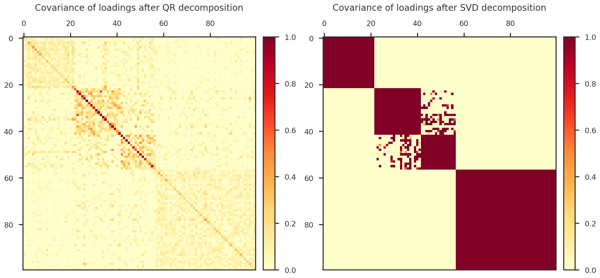
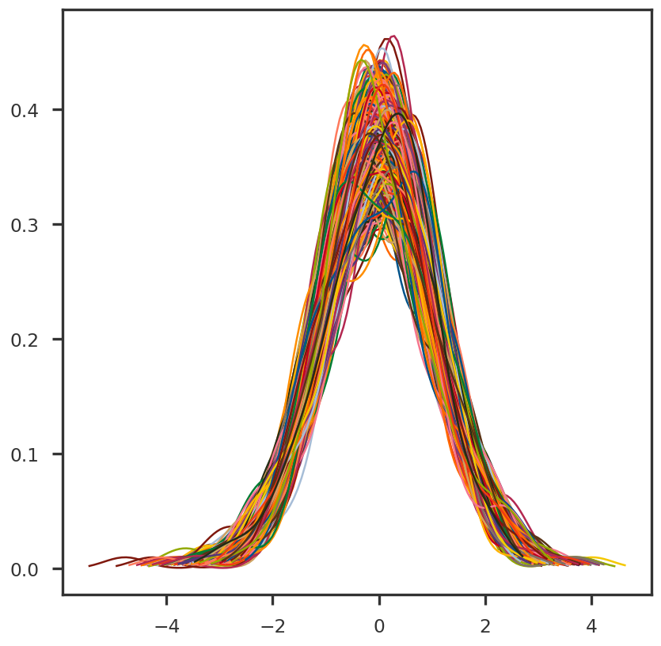
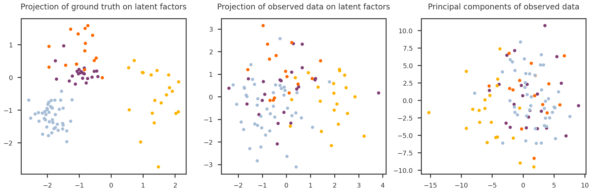

where \mathbf{L} is an N \times K matrix, \mathbf{F} is a P \times K matrix, and \mathbf{E} is an N \times P matrix of residuals. For consistency, we adopt the notation and terminology of factor analysis, and refer to \mathbf{L} as the loadings and \mathbf{F} as the factors.
Different matrix factorization methods assume different constraints on \mathbf{L} and \mathbf{F}. For example, PCA assumes that the columns of \mathbf{L} are orthogonal and the columns of \mathbf{F} are orthonormal. For the purpose of generating a ground truth, we will use a generative model,
\mathbf{Y} = \mathbf{M} + \mathbf{L}\mathbf{F}^{\intercal} + \mathbf{E}\,,
where every row of \mathbf{M} is equal to the mean value for each feature. The noise \mathbf{E} is sampled from \mathcal{N}(0, \sigma^2 \mathbf{I}). Equivalently, for sample (phenotype) i and feature (SNP) j,
y_{ij} = m_j + \sum_{k = 1}^K l_{ik}f_{jk} + e_j
We will make some realistic assumptions of \mathbf{M}, \mathbf{L}, \mathbf{F} and \mathbf{E}, as discussed below.
Getting setup
Code
import numpy as npimport pandas as pdimport matplotlib.pyplot as pltfrom matplotlib import colormaps as mpl_cmapsimport matplotlib.colors as mpl_colorsfrom mpl_toolkits.axes_grid1 import make_axes_locatablefrom pymir import mpl_stylesheetfrom pymir import mpl_utilsmpl_stylesheet.banskt_presentation(splinecolor ='black', dpi =120, colors ='kelly')import syssys.path.append("../utils/")import histogram as mpy_histogram
The matrix \mathbf{F} of latent factors, size P \times K. Properties: - Semi-orthogonal matrix - Columns are K orthonormal vectors (all orthogonal to each other: ortho; all of unit length: **normal”)
Code
from scipy import stats as spstatsF = spstats.ortho_group.rvs(nsnp)[:, :nfctr]# Quickly check if vectors are orthonormalnp.testing.assert_array_almost_equal(F.T @ F, np.identity(nfctr))
Code
def do_standardize(Z, axis =0, center =True, scale =True):''' Standardize (divide by standard deviation) and/or center (subtract mean) of a given numpy array Z axis: the direction along which the std / mean is aggregated. In other words, this axis is collapsed. For example, axis = 0, means the rows will aggregated (collapsed). In the output, the mean will be zero and std will be 1 along the remaining axes. For a 2D array (matrix), use axis = 0 for column standardization (with mean = 0 and std = 1 along the columns, axis = 1). Simularly, use axis = 1 for row standardization (with mean = 0 and std = 1 along the rows, axis = 0). center: whether or not to subtract mean. scale: whether or not to divide by std. ''' dim = Z.ndimif scale: Znew = Z / np.std(Z, axis = axis, keepdims =True)else: Znew = Z.copy()if center: Znew = Znew - np.mean(Znew, axis = axis, keepdims =True)return Znewdef get_equicorr_feature(n, p, rho =0.8, seed =None, standardize =True):''' Return a matrix X of size n x p with correlated features. The matrix S = X^T X has unit diagonal entries and constant off-diagonal entries rho. '''if seed isnotNone: np.random.seed(seed) iidx = np.random.normal(size = (n , p)) comR = np.random.normal(size = (n , 1)) x = comR * np.sqrt(rho) + iidx * np.sqrt(1- rho)# standardize if requiredif standardize: x = do_standardize(x)return xdef get_blockdiag_features(n, p, rholist, groups, rho_bg =0.0, seed =None, standardize =True):''' Return a matrix X of size n x p with correlated features. The matrix S = X^T X has unit diagonal entries and k blocks of matrices, whose off-diagonal entries are specified by elements of `rholist`. rholist: list of floats, specifying the correlation within each block groups: list of integer arrays, each array contains the indices of the blocks. ''' np.testing.assert_equal(len(rholist), len(groups))if seed isnotNone: np.random.seed(seed) iidx = get_equicorr_feature(n, p, rho = rho_bg)# number of blocks k =len(rholist)# zero initialize x = iidx.copy() #np.zeros_like(iidx)for rho, grp inzip(rholist, groups): comR = np.random.normal(size = (n, 1)) x[:, grp] = np.sqrt(rho) * comR + np.sqrt(1- rho) * iidx[:, grp]# standardize if requiredif standardize: x = do_standardize(x)return xdef get_blockdiag_matrix(n, rholist, groups): R = np.ones((n, n))for i, (idx, rho) inenumerate(zip(groups, rholist)): nblock = idx.shape[0] xblock = np.ones((nblock, nblock)) * rho R[np.ix_(idx, idx)] = xblockreturn R# def get_correlated_features (n, p, R, seed = None, standardize = True, method = 'cholesky'):# '''# method: Choice of method, cholesky or eigenvector or blockdiag.# '''# # Generate samples from independent normally distributed random# # variables (with mean 0 and std. dev. 1).# x = norm.rvs(size=(p, n))# # We need a matrix `c` for which `c*c^T = r`. We can use, for example,# # the Cholesky decomposition, or the we can construct `c` from the# # eigenvectors and eigenvalues.# if method == 'cholesky':# # Compute the Cholesky decomposition.# c = cholesky(r, lower=True)# else:# # Compute the eigenvalues and eigenvectors.# evals, evecs = eigh(r)# # Construct c, so c*c^T = r.# c = np.dot(evecs, np.diag(np.sqrt(evals)))# # Convert the data to correlated random variables. # y = np.dot(c, x)# return ydef get_sample_indices(ntrait, ngwas, shuffle =True):''' Distribute the samples in the categories (classes) ''' rs =0.6* np.random.rand(ntrait) +0.2# random sample from [0.2, 0.8) z = np.array(np.round((rs / np.sum(rs)) * ngwas), dtype =int) z[-1] = ngwas - np.sum(z[:-1]) tidx = np.arange(ngwas)if shuffle: np.random.shuffle(tidx) bins = np.zeros(ntrait +1, dtype =int) bins[1:] = np.cumsum(z) sdict = {i : np.sort(tidx[bins[i]:bins[i+1]]) for i inrange(ntrait)}return sdictdef plot_covariance_heatmap(ax, X):return plot_heatmap(ax, np.cov(X))def plot_heatmap(ax, X):''' Helps to plot a heatmap ''' cmap1 = mpl_cmaps.get_cmap("YlOrRd").copy() cmap1.set_bad("w") norm1 = mpl_colors.TwoSlopeNorm(vmin=0., vcenter=0.5, vmax=1.) im1 = ax.imshow(X.T, cmap = cmap1, norm = norm1, interpolation='nearest', origin ='upper') ax.tick_params(bottom =False, top =True, left =True, right =False, labelbottom =False, labeltop =True, labelleft =True, labelright =False) divider = make_axes_locatable(ax) cax = divider.append_axes("right", size="5%", pad=0.2) cbar = plt.colorbar(im1, cax=cax, fraction =0.1)returndef reduce_dimension_svd(X, nfeature =None):if k isNone: k =int(X.shape[1] /10) k =max(1, k) U, S, Vt = np.linalg.svd(X) Uk = U[:, :k] Sk = S[:k]return Uk @ Sk# L_qr_ortho, L_qr_eig = orthogonalize_qr(do_standardize(L_full))# #idsort = np.argsort(L_eig)[::-1]# #idselect = idsort[:nfctr]# idselect = np.arange(nfctr)# L_qr = L_qr_ortho[:, idselect] @ np.diag(L_qr_eig[idselect])# L_svd_ortho, L_svd_eig = orthogonalize_svd(do_standardize(L_full), k = nfctr)# L_svd = L_svd_ortho @ np.diag(L_svd_eig)
Generate loadings of each factor
The matrix \mathbf{L} of loadings, size N \times K. It encapsulates the similarity and distinctness of the samples in the latent space. We design \mathbf{L} to contain the a covariance structure similar to the realistic data. The covariance of \mathbf{L} is shown in Figure 1
To-Do: Is there a way to enforce the columns of \mathbf{L} to be orthogonal? This can be both good and bad. Good, because many matrix factorization methods like PCA, etc assume that W is orthogonal. Bad, because real data may not be orthogonal.
Code
sample_dict = get_sample_indices(ntrait, ngwas, shuffle =False)sample_indices = [x for k, x in sample_dict.items()]rholist = [0.7for x in sample_indices]rholist = [0.9, 0.5, 0.6, 0.9]
The covariance of \mathbf{Y}_{\mathrm{true}} = \mathbf{L}\mathbf{F}^{\intercal} is shown in Figure 2 (left panel). In the right panel, we show the covariance of \mathbf{Y}_{\mathrm{true}}\mathbf{F}.
Code
fig = plt.figure(figsize = (16, 8))ax1 = fig.add_subplot(121)ax2 = fig.add_subplot(122)Y_true = L @ F.TY_true_proj = Y_true @ Fplot_covariance_heatmap(ax1, Y_true)plot_covariance_heatmap(ax2, Y_true_proj)ax1.set_title("Covariance of Y in feature space", pad =50)ax2.set_title("Covariance of Y after projection to latent space", pad =50)plt.tight_layout()plt.show()
Figure 2: Visualization of the true input matrix
Approximate methods to obtain loadings decomposition
Enforcing orthogonality on the loading will naturally overshrink the similarity and enhance the distinctness. Still, we can reduce the dimension of L_full using truncated SVD and use the projection of L_full on the first K components of the right singular vector.
Another option is to use a QR decomposition to obtain orthogonal columns, scaled by some approximate eigenvalues: 1. Transpose L_full and use QR decomposition. 2. \mathbf{s}_{qr} \leftarrow eigenvalues (diagonal of \mathbf{R}). 3. Define \mathbf{s}' such that s'_i = 1 if s_{qr} > 0 and s'_i = -1 if s_{qr} < 0. 4. Choose K orthogonal vectors from \mathbf{Q} multiplied by \mathrm{diag}(\mathbf{s}'). This does not work numerically, as shown below in Figure 3
Code
def orthogonalize_qr(X): Q, R = np.linalg.qr(X) eigv = np.diag(R).copy() eigv[eigv >0] =1. eigv[eigv <0] =-1. U = Q @ np.diag(eigv)#return U, np.diag(R)return Q, np.abs(np.diag(R))def orthogonalize_svd(X, k =None):if k isNone: k = X.shape[1] U, S, Vt = np.linalg.svd(X) Uk = U[:, :k] Sk = S[:k]return Uk, SkL_qr_ortho, L_qr_eig = orthogonalize_qr(do_standardize(L_full))#idsort = np.argsort(L_eig)[::-1]#idselect = idsort[:nfctr]idselect = np.arange(nfctr)L_qr = L_qr_ortho[:, idselect] @ np.diag(L_qr_eig[idselect])L_svd_ortho, L_svd_eig = orthogonalize_svd(do_standardize(L_full), k = nfctr)L_svd = L_svd_ortho @ np.diag(L_svd_eig)fig = plt.figure(figsize = (16, 8))ax1 = fig.add_subplot(121)ax2 = fig.add_subplot(122)plot_covariance_heatmap(ax1, L_qr)plot_covariance_heatmap(ax2, L_svd)ax1.set_title("Covariance of loadings after QR decomposition", pad =50)ax2.set_title("Covariance of loadings after SVD decomposition", pad =50)plt.tight_layout()plt.show()

Figure 3: Approximate methods for loading decomposition
Generate Data
variable
data
Y_true
Ground truth
Y_true_proj
Projection of ground truth on the latent factors
Y
Observed data
Y_std
Observed data, standardized to mean 0 and std 1 for each feature (column)
Y_std_proj
Projection of Y_std on the latent factors
Code
# fixed noise for every SNPsigma2 = np.random.uniform(1e-2, 5.0, nsnp)noise = np.random.multivariate_normal(np.zeros(nsnp), np.diag(sigma2), size = ngwas)meanshift = np.random.normal(0, 10, size = (1, nsnp))# Generate data and its projections on true FY_true = L @ F.TY_true_proj = Y_true @ FY = Y_true + meanshift + noiseY_std = do_standardize(Y)Y_std_proj = Y_std @ F
We obtain the observed \mathbf{Y} by adding noise and mean to \mathbf{Y}_{\mathrm{true}}. The covariance of \mathbf{Y} is shown in the left panel of (left panel). In the right panel, we show the covariance of \mathbf{Y}\mathbf{F}.
Code
fig = plt.figure(figsize = (16, 8))ax1 = fig.add_subplot(121)ax2 = fig.add_subplot(122)plot_covariance_heatmap(ax1, Y_std)plot_covariance_heatmap(ax2, Y_std_proj)ax1.set_title("Covariance of Y in feature space", pad =50)ax2.set_title("Covariance of Y after projection to latent space", pad =50)plt.tight_layout()plt.show()
Figure 4: Visualization of the observed input matrix
Plot distribution of each feature
Code
fig = plt.figure()ax1 = fig.add_subplot(111)for i inrange(Y.shape[1]): x = Y_std[:, i] outlier_mask = mpy_histogram.iqr_outlier(x, axis =0, bar =5) data = x[~outlier_mask] xmin, xmax, bins, xbin = mpy_histogram.get_bins(data, 100, None, None) curve = mpy_histogram.get_density(xbin, data) ax1.plot(xbin, curve)plt.show()

Figure 5: Distribution of z-scores for all phenotypes
Can SVD decomposition capture the signal?
In Figure 6, we look at the separation of the underlying features using - projection of \mathbf{Y}_{\mathrm{true}} on \mathbf{F} (left panel). - projection of \mathbf{Y} on \mathbf{F} (center panel). - principal components obtained from SVD of \mathbf{Y} (right panel).
fig = plt.figure(figsize = (18, 6))idx1 =1idx2 =2ax1 = fig.add_subplot(131)ax2 = fig.add_subplot(132)ax3 = fig.add_subplot(133)mcolors = mpl_stylesheet.kelly_colors()for i, grp inenumerate(sample_indices): ax1.scatter(Y_true_proj[grp, idx1], Y_true_proj[grp, idx2], color = mcolors[i]) ax2.scatter(Y_std_proj[grp, idx1], Y_std_proj[grp, idx2], color = mcolors[i]) ax3.scatter(pcomps_svd[grp, idx1], pcomps_svd[grp, idx2], color = mcolors[i])ax1.set_title ("Projection of ground truth on latent factors", pad =20)ax2.set_title ("Projection of observed data on latent factors", pad =20)ax3.set_title ("Principal components of observed data", pad =20)plt.tight_layout()plt.show()

Figure 6: Separation of components in different spaces